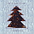
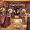

Tak śpiewamy
Kilka utworów w naszym wykonaniu:
- Anioł pasterzom mówił
- Bylić pasterze
- Christus natus est nobis
- Gdy się Chrystus rodzi
- W żłobie leży
- Wesoły nam, wesoły nam
Repertuar nasz jest tak urozmaicony, jak samo życie. Czasem śpiewamy pieśni podniosłe, kiedy indziej piosenki frywolne - od Bogurodzicy po „Viva, viva la botiglia”, od piosenek ludowych po fragmenty oper.
A tyle jeszcze muzyki przed nami....Chętnie uświetniamy zarówno oficjalne uroczystości, jak i zupełnie nieoficjalne oraz prywatne imprezy i przyjęcia.
Zapraszamy do zapoznania się z repertuarem naszego chóru.Nagraliśmy 4 płyty CD.
z pieśniami a capella z różnych okresów stanowiącą przegląd repertuaru chóru pod dyr. Moniki Bachowskiej (1999)
{kind=link}
z kolędami, pod dyr. Izabeli Szoty (2002)
{kind=link}
{kind=link}
w 2008r. nagraliśmy płytę z kolędami, na której znalazły się utwory w wykonaniu: Cameraty, Warszawskiego Chóru Chłopięcego i Męskiego przy Akademii Muzycznej im. F. Chopina w Warszawie pod dyrekcją Krzysztofa Kusiela-Moroza oraz Chłopięcego Chóru Archidiecezji Wrocławskiej przy Papieskim Wydziale Teologicznym „Pueri Cantores Wratislavienses” pod dyrekcją ks. Stanisława Nowaka.
{kind=link}

© Stowarzyszenie Muzyczne Chór Camerata Wieliczka
Projekt i wykonanie:  Prowadzenie strony: Małgorzata Wysocka-Cebula
Prowadzenie strony: Małgorzata Wysocka-Cebula